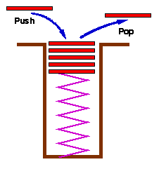
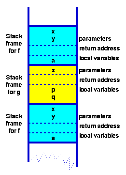

| Data Structures and Algorithms |
| 3.3 Stacks |
Another way of storing data is in a stack. A stack is generally implemented with only two principle operations (apart from a constructor and destructor methods):
| push | adds an item to a stack |
| pop | extracts the most recently pushed item from the stack |
| top | returns the item at the top without removing it [9] |
| isempty | determines whether the stack has anything in it |
|  | A common model of a stack is a
plate or coin stacker.
Plates are "pushed" onto to the top and "popped" off the top.
Stacks form Last-In-First-Out (LIFO) queues and have many applications from the parsing of algebraic expressions to ... |
A formal specification of a stack class would look like:
typedef struct t_stack *stack;
stack ConsStack( int max_items, int item_size );
/* Construct a new stack
Pre-condition: (max_items > 0) && (item_size > 0)
Post-condition: returns a pointer to an empty stack
*/
void Push( stack s, void *item );
/* Push an item onto a stack
Pre-condition: (s is a stack created by a call to ConsStack) &&
(existing item count < max_items) &&
(item != NULL)
Post-condition: item has been added to the top of s
*/
void *Pop( stack s );
/* Pop an item of a stack
Pre-condition: (s is a stack created by a call to
ConsStack) &&
(existing item count >= 1)
Post-condition: top item has been removed from s
*/
Points to note:
As a function calls another function, first its arguments, then the return address and finally space for local variables is pushed onto the stack. Since each function runs in its own "environment" or context, it becomes possible for a function to call itself - a technique known as recursion. This capability is extremely useful and extensively used - because many problems are elegantly specified or solved in a recursive way.
|  | Program stack after executing a pair of mutually recursive functions:
function f(int x, int y) {
int a;
if ( term_cond ) return ...;
a = .....;
return g(a);
}
function g(int z) {
int p,q;
p = ...; q = ...;
return f(p,q);
}
Note how all of function
f
and g's environment
(their parameters and local
variables) are found in the stack frame.
When
f
is called a second time from
g, a new frame for the second
invocation of
f
is created. |
Key terms |
|
Continue on to Recursion Back to the Table of Contents |